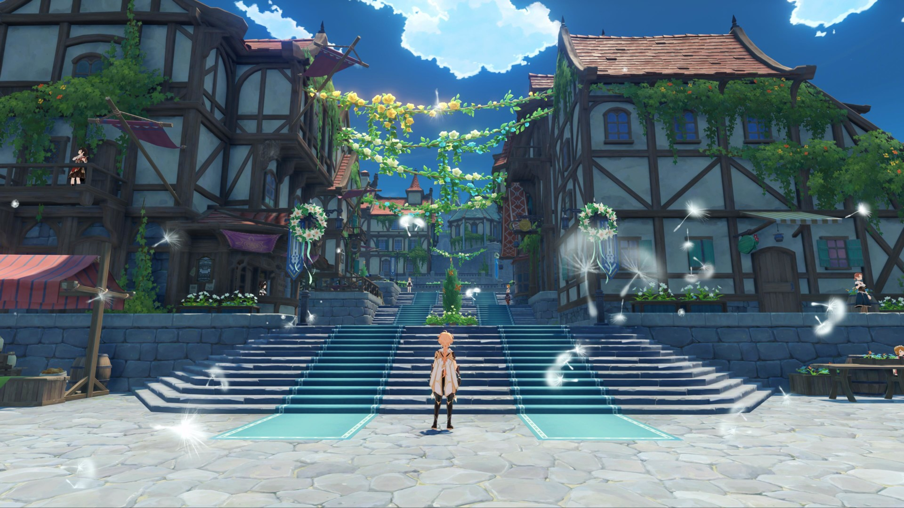
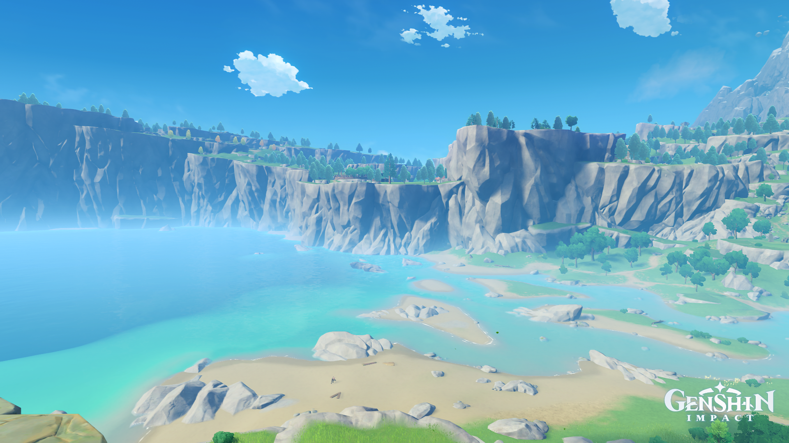
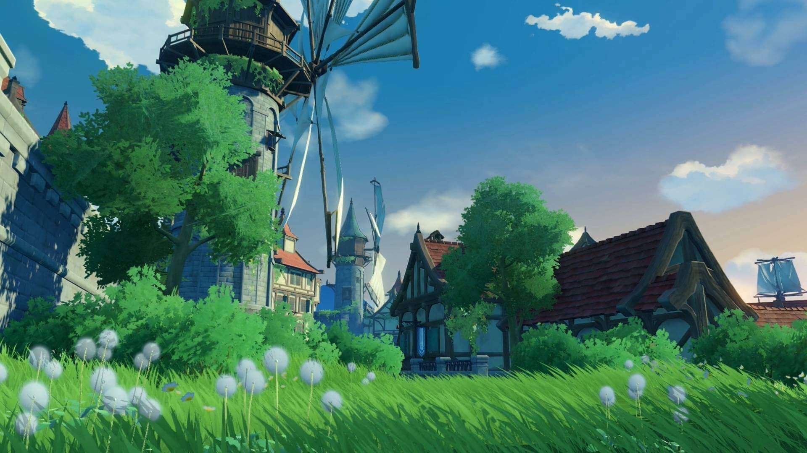
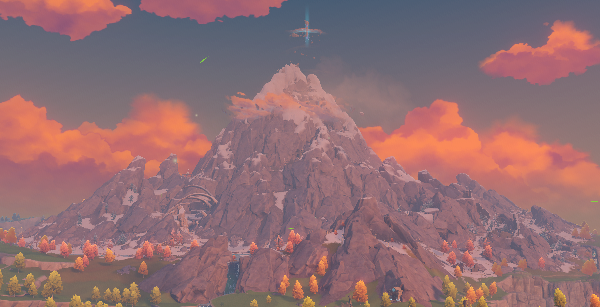

Добро пожаловать в Мондштадт!
Город свободы и песен.
-
Город свободы. Расположен в северо-восточной части материка Тейват. Минуя горные ущелья и обширные равнины, ветер свободы с ароматом одуванчиков проносится над Сидровым озером, в сердце которого раскинулся величественный Мондштадт, и приносит с собой благословение архонта ветра Барбатоса.
- 
Интересные места
Побережье Сокола
Тянущееся от самой Равнины Бризов Побережье Сокола вместе с Мысом Веры окружают с трёх сторон залив к востоку от Мондштадта. Из-за своей протяжённости и мелководных пляжей Побережье Сокола является популярным местом для отдыха мондштадтцев. Иногда в небе можно заметить пролетающего сокола.

Спрингвейл
Беззаботная деревушка Спрингвейл расположилась вдоль озера на юге Мондштадта.
Большинство жителей деревни круглый год занимаются охотой и поставляют мясо в рестораны Мондштадта.
Сельская атмосфера и дикая природа Спрингвейла привлекают туристов.
Если вам во время визита сюда посчастливится встретить одного легендарного мясного шеф-повара,
я гарантирую, вы не покинете Спрингвейл неудовлетворённым.

Драконий Хребет
Драконий Хребет - горная вершина, хранящая останки ядовитого дракона Дурина, который был повержен в схватке с Двалином. Немногие путешественники осмелятся покорить этот регион, кишащий монстрами и ядовитой кровью дракона.

Винокурня «Рассвет»
Винокурня «Рассвет» находится к юго-западу от Мондштадта. Секреты производства лучшего мондштадтского вина передаются от отца к сыну.
Из выращенного здесь винограда производят различные сорта вин, которые популярны по всему континенту.
Каждый год лишь малая часть вина остаётся в Мондштадте. Большая же часть уходит на продажу с купцами по южным торговым маршрутам.